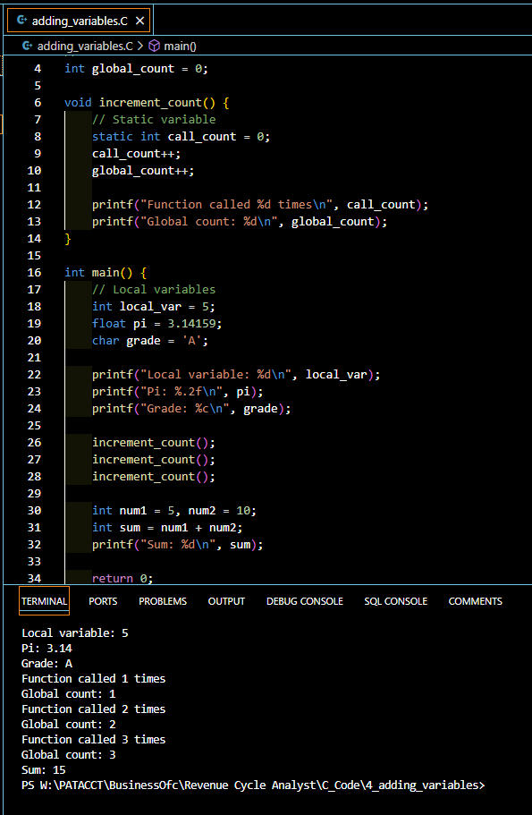

Introduction to Variables in C
In the world of C programming, variables play a crucial role. They are human-readable names that refer to specific memory locations where data is stored. Understanding how to declare and use variables effectively is foundational for any programmer. This guide will walk you through the basics of variables in C, helping you become proficient in managing and using data within your programs.
Understanding Memory and Variables
How Variables Map to Memory
Every variable in C is a storage location with a specific data type, which determines the size and layout of the variable’s memory; the range of values that can be stored; and the set of operations that can be applied to the variable.
Memory Allocation for Variables
When you declare a variable, the compiler allocates memory for it. The amount of memory allocated depends on the data type of the variable. Understanding this concept is essential for efficient memory management and optimization in C programming.
Types of Variables in C
Primitive Data Types
C supports several primitive data types, including:
- int: Used for integers.
- char: Used for characters.
- float: Used for floating-point numbers.
- double: Used for double-precision floating-point numbers.
User-Defined Data Types
C also allows the creation of user-defined data types, such as:
- struct: A structure is a user-defined data type that groups different data types.
- union: Similar to a structure, but members share the same memory location.
- enum: An enumeration is a data type consisting of a set of named values.
Declaring Variables in C
Syntax of Variable Declaration
To declare a variable in C, specify the data type followed by the variable name. For example:
int age;
char initial;
float salary;Examples of Variable Declarations
Consider the following declarations:
int score = 90;
char grade = 'A';
double pi = 3.14159;Variable Naming Conventions
Rules for Naming Variables
Naming variables in C must follow these rules: - Must begin with a letter or an underscore (_). - Can contain letters, digits, and underscores. - Case-sensitive.
Best Practices for Naming
- Use meaningful names (e.g.,
totalCostinstead ofx). - Avoid using reserved keywords.
- Maintain consistency in naming conventions (e.g., camelCase or snake_case).
Scope and Lifetime of Variables
Local vs Global Variables
- Local Variables: Declared inside a function or block and accessible only within it.
- Global Variables: Declared outside all functions and accessible throughout the program.
Static and Dynamic Variables
- Static Variables: Retain their value between function calls.
- Dynamic Variables: Allocated and deallocated during runtime using pointers.
Initializing Variables
Default Initialization
Variables declared without an initial value have undefined content. Always initialize variables to avoid undefined behavior.
Explicit Initialization
Assign a value at the time of declaration:
int count = 0;
float temperature = 36.5;Using Variables in Expressions
Arithmetic Operations
Variables can be used in arithmetic operations:
int sum = a + b;
float product = x * y;Logical Operations
Variables also participate in logical operations:
if (isAvailable && isAffordable) {
printf("Purchase possible!");
}Common Errors with Variables
Uninitialized Variables
Using a variable before initializing it can lead to unpredictable results.
Type Mismatch Errors
Ensuring variables are used with compatible types prevents type mismatch errors.
Advanced Variable Concepts
Pointers and Variables
Pointers store memory addresses of variables. They are crucial for dynamic memory management.
Arrays and Variables
Arrays are collections of variables of the same type. They allow structured data storage and manipulation.
Debugging Variable Issues
Tools for Debugging
Use debugging tools like GDB to trace variable values and program execution.
Common Debugging Techniques
- Print statements to monitor variable values.
- Breakpoints to pause execution and inspect variables.
Optimizing Variable Usage
Memory Management Tips
Efficient memory usage reduces program overhead. Use appropriate data types and free unused memory.
Performance Considerations
Optimize variable usage by minimizing redundant variables and operations.
Practical Examples
Simple Programs Using Variables
#include <stdio.h>
int main() {
int num1 = 5, num2 = 10;
int sum = num1 + num2;
printf("Sum: %d\n", sum);
return 0;
}Real-world Applications
Variables are used to store user inputs, perform calculations, and manage state in complex applications.
Here are a couple of examples:
#include <stdio.h>
// Global variable
int global_count = 0;
void increment_count() {
// Static variable
static int call_count = 0;
call_count++;
global_count++;
printf("Function called %d times\n", call_count);
printf("Global count: %d\n", global_count);
}
int main() {
// Local variables
int local_var = 5;
float pi = 3.14159;
char grade = 'A';
printf("Local variable: %d\n", local_var);
printf("Pi: %.2f\n", pi);
printf("Grade: %c\n", grade);
increment_count();
increment_count();
increment_count();
int num1 = 5, num2 = 10;
int sum = num1 + num2;
printf("Sum: %d\n", sum);
return 0;
}Output:
Local variable: 5
Pi: 3.14
Grade: A
Function called 1 times
Global count: 1
Function called 2 times
Global count: 2
Function called 3 times
Global count: 3
Sum: 15And another example from Chapter 5 Adding Variables To Your Programs from the book “C Programming for the Absolute Beginner”, Third Edition, Perry and Miller:
#include <stdio.h>
// Code snippet from Chapter 5 Adding Variables To Your Programs
// C Programming Absolute Beginner's Guide, Third Edition, Perry and Miller
main() {
char first_initial, middle_initial;
int number_of_pencils;
int number_of_notebooks;
float pencils = 0.23;
float notebooks = 2.89;
float lunchbox = 4.99;
first_initial = 'J';
middle_initial = 'R';
number_of_pencils = 7;
number_of_notebooks = 4;
printf("%c%c needs %d pencils, %d notebooks, and 1 lunchbox\n", first_initial, middle_initial, number_of_pencils, number_of_notebooks);
printf("The total cost is $%.2f\n", number_of_pencils * pencils + number_of_notebooks * notebooks + lunchbox);
return 0;
}JR needs 7 pencils, 4 notebooks, and 1 lunchbox
The total cost is $18.16FAQs about Variables in C
- What are the rules for variable names in C?
- Variable names must start with a letter or underscore, are case-sensitive, and cannot be a reserved keyword.
- How do I initialize a variable in C?
- Use the assignment operator during declaration, e.g.,
int count = 0;.
- Use the assignment operator during declaration, e.g.,
- What is the difference between local and global variables?
- Local variables are limited to the function/block, while global variables are accessible throughout the program.
- How do I avoid uninitialized variable errors?
- Always assign an initial value when declaring a variable.
- Can I change the data type of a variable in C?
- No, once declared, a variable’s data type cannot be changed.
Conclusion
Variables are the building blocks of C programming, enabling you to store and manipulate data efficiently. By understanding their types, scope, and lifecycle, you can write more robust and maintainable code. Practice writing programs using variables to solidify your understanding and enhance your programming skills.
Your Turn!
We hope this guide has been helpful in understanding variables in C. If you have any questions or feedback, please share them in the comments or on social media!
References
- Kernighan, B. W., & Ritchie, D. M. (1988). The C Programming Language. Prentice Hall.
- Harbison, S. P., & Steele, G. L. (2002). C: A Reference Manual. Prentice Hall.
- Prata, S. (2013). C Primer Plus. Addison-Wesley Professional.
Happy Coding! 🚀
